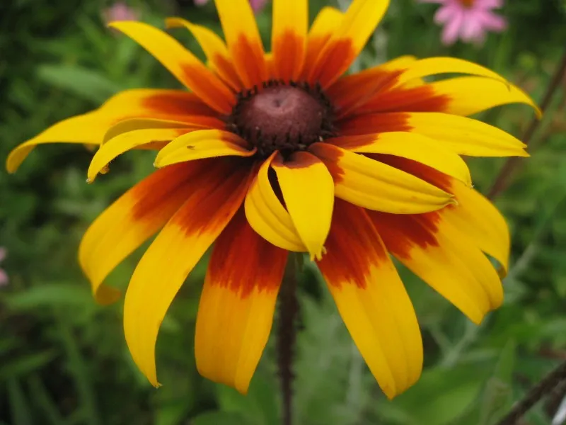

Seasonal Flowers
Spring Blooms
Explore vibrant flowers that flourish in spring.

Summer Radiance
Enjoy the colors of summer with these beautiful flowers.
Autumn Hues
Discover the rich tones of autumn blooms.
Winter Whites
Find the elegance of winter flowers.
Floral Arrangement Ideas

Wedding Centerpiece
Elegant floral arrangements for your special day.
Home Decoration
Add beauty to your home with these ideas.
Table Settings
Beautiful centerpieces for your dining table.
Behind The Scenes
See how our beautiful flowers are prepared and arranged before they reach you. We take great care in selecting the freshest blooms and creating stunning arrangements for every occasion.